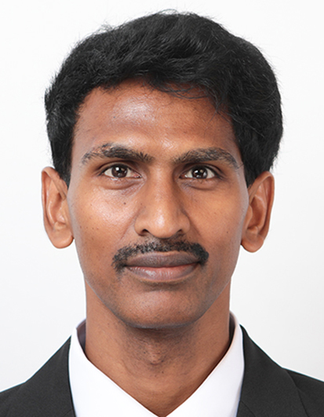

ACADEMIC RESEARCH PORTFOLIO
Dr. Paulraj Arunkumar
Research Professor
School of Chemical Engineering
Engineering materials for a sustainable future.

CHONNAM NATIONAL UNIVERSITY · GWANGJU, SOUTH KOREA
INTRODUCTION
Research at the intersection of materials and energy.
Explore electrocatalysis, energy storage, and optoelectronic materials. These research themes and biographical details are draft content pending the professor's confirmation.
Read academic profile →